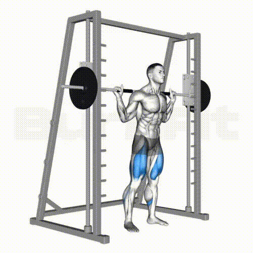

Ejercicios Fundamentales

Haz clic en la imagen para ver más ejercicios avanzados
1. Smith Machine Squats
Cómo realizar: Agrega un peso razonable a tus metas. Párate con los pies separados al ancho de los hombros. Baja como si fueras a sentarte, manteniendo el pecho elevado. Desciende hasta que tus muslos estén paralelos al suelo y regresa a la posición inicial.
Músculos: Cuádriceps, glúteos, isquiotibiales.
2. Push-ups

Cómo realizar: En posición de plancha con manos al ancho de hombros, baja el pecho hacia el suelo y luego empuja hacia arriba manteniendo el cuerpo recto.
Músculos: Pectorales, deltoides, tríceps.
3. Peso Muerto (Deadlift)

Cómo realizar: Párate frente a la barra, flexiona caderas y rodillas para agarrarla. Levanta manteniendo la espalda recta hasta estar erguido completamente.
Músculos: Isquiotibiales, glúteos, espalda baja.
Músculos Trabajados
| Ejercicio | Músculos Principales | Músculos Secundarios |
|---|---|---|
| Sentadillas | Cuádriceps, Glúteos | Isquiotibiales, Core |
| Flexiones | Pectorales, Tríceps | Deltoides, Core |
| Peso Muerto | Isquiotibiales, Glúteos | Espalda Baja, Trapecios |